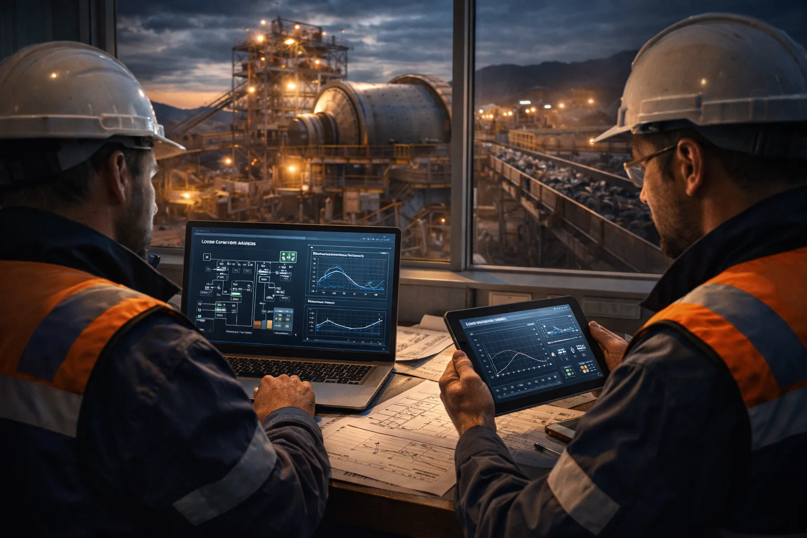
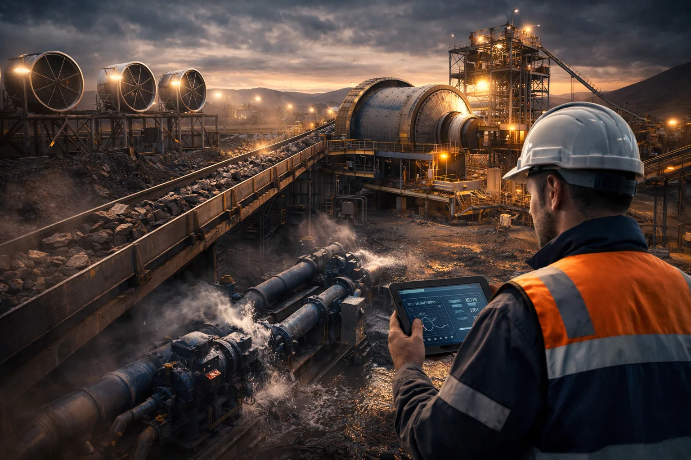
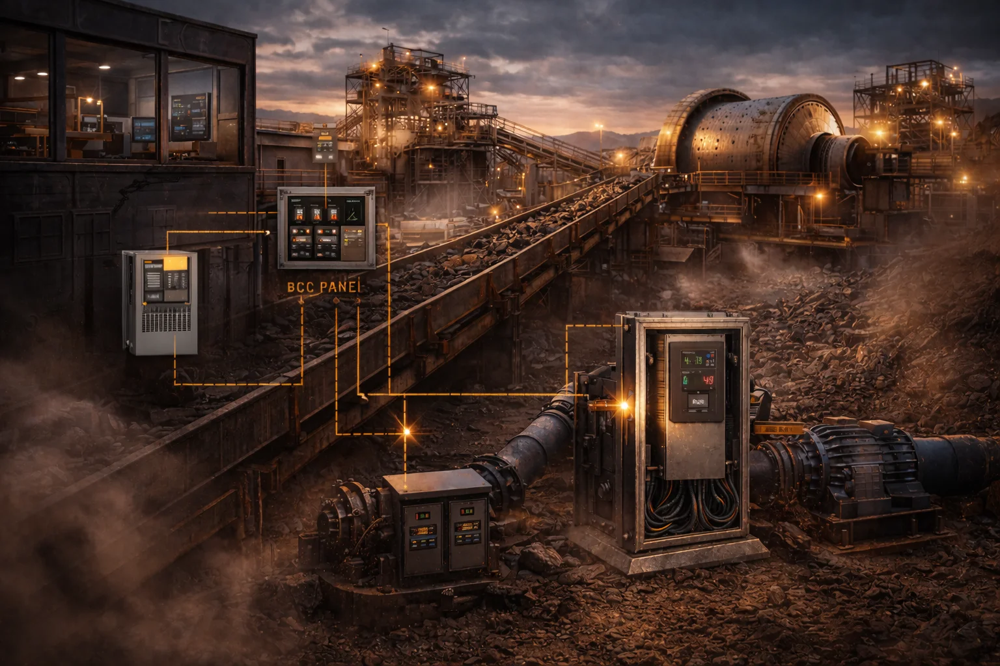
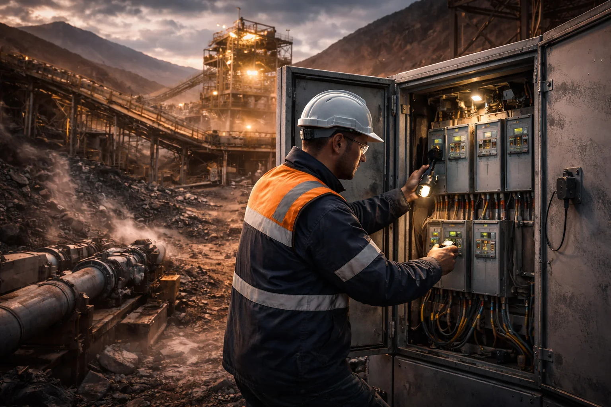
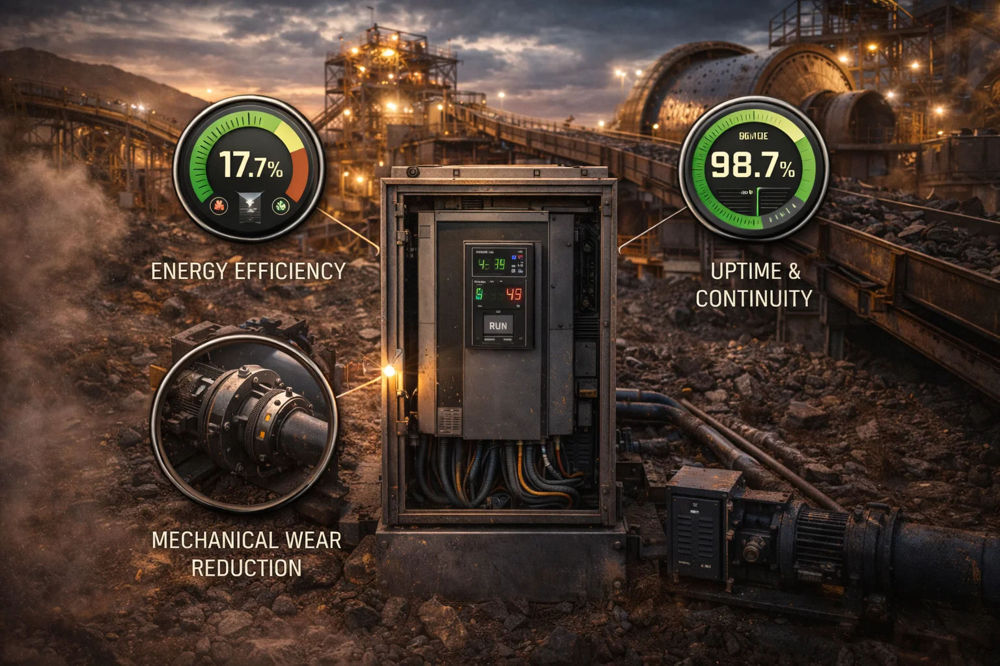

Indice del articulo
- Resumen Ejecutivo
- Aplicaciones Mineras Donde el VFD Genera Mayor Valor
- Criterios de Seleccion de Variadores para Mineria
- Como seleccionar un variador para mineria
- Arquitectura Tipica de Drives en Mineria
- Desafios Tecnicos Clave
- Errores Comunes y Como Evitarlos
- Mini Caso de Referencia
- Hallazgos SEO y Conversion
- FAQ Tecnica
Resumen Ejecutivo
Los variadores de frecuencia en mineria (VFD mineria o drives mineria) se han convertido en una de las palancas tecnicas con mayor impacto en continuidad operativa, eficiencia energetica y control de proceso. En operaciones de extraccion, trituracion, molienda, bombeo y ventilacion, controlar velocidad, par y rampa de arranque puede significar la diferencia entre una línea estable y una planta con paros frecuentes.
Cuando se evalua un proyecto de control de motores en mineria, el variador no debe verse como un equipo aislado. Debe analizarse como parte de una arquitectura electrica completa: motor, carga mecanica, red, protecciones, ambiente, estrategia de control y mantenimiento. Esta vision integral es clave para evitar sobredimensionamientos costosos o subdimensionamientos que comprometan confiabilidad.
En mineria, la exigencia operativa es particularmente alta: cargas de par constante, picos de sobrecarga, redes electricas exigidas, polvo, vibracion y ubicaciones a gran altitud. Por eso, los variadores para bandas transportadoras, bombas, ventiladores y molinos requieren criterios tecnicos de especificacion mucho mas robustos que en aplicaciones industriales convencionales.
Este articulo resume como seleccionar y aplicar VFD en mineria con un enfoque practico: donde generan mayor valor, que criterios usar para elegirlos, que arquitectura tipica conviene, cuales son los errores mas comunes y como estructurar una ruta de implementacion que mejore disponibilidad y reduzca costo total de operacion.
Aplicaciones Mineras Donde el VFD Genera Mayor Valor

Los variadores de frecuencia tienen su mayor retorno cuando se aplican en cargas con variabilidad, rampas controladas y requerimientos altos de disponibilidad. En la practica, las aplicaciones con mejor potencial tecnico y economico suelen ser:
- Bandas transportadoras: los variadores para bandas transportadoras reducen esfuerzos mecanicos en arranque, minimizan deslizamientos y mejoran sincronizacion de tramos.
- Bombas de proceso y desague: permiten ajustar caudal y presion segun demanda real, recortando consumo y golpes hidraulicos.
- Ventilacion principal y auxiliar: habilitan control fino de flujo de aire, fundamental para seguridad y cumplimiento de condiciones de trabajo.
- Molinos y trituracion: mejoran control de par a baja velocidad, especialmente en secuencias de arranque y operacion transitoria.
- Sistemas auxiliares criticos: como agitadores, filtracion o bombeo de relaves, donde el control dinamico protege equipos y mantiene calidad de proceso.
En todos estos casos, un enfoque correcto de drives mineria ayuda a reducir picos de corriente, estabilizar la red interna de planta y proteger activos mecanicos. El resultado no es solo ahorro energetico: tambien mejora de confiabilidad, menos mantenimiento correctivo y mayor predictibilidad operativa.
Criterios de Seleccion de Variadores para Mineria
Elegir correctamente un variador en industria minera requiere una matriz de decision tecnica y no solo comparar potencia nominal. Los criterios recomendados son:
- Perfil de carga real: par constante, variable o mixto; ciclos de arranque/parada; tiempo en sobrecarga.
- Capacidad de sobrecarga del VFD: especialmente critica en molinos y transportadores con inercia alta.
- Estrategia de control: escalar, vectorial o control avanzado, segun precision y dinamica requerida.
- Condiciones ambientales: polvo, temperatura, humedad, vibracion y nivel de contaminacion.
- Altitud del sitio: considerar derating, enfriamiento y aislamiento para operaciones por encima de 2,000-4,000 msnm.
- Calidad de energia: armonicos, factor de potencia, filtros, compatibilidad con red y transformador.
- Mantenibilidad: acceso a repuestos, diagnostico remoto, parametrizacion y soporte de campo.
Desde una perspectiva de eficiencia energetica mineria, los mejores proyectos son los que integran seleccion de equipo, estrategia de control y comisionamiento en una sola hoja de ruta. Sin esta integracion, es comun que el rendimiento esperado no se materialice en operacion real.
Como seleccionar un variador para mineria
Para seleccionar correctamente un variador de frecuencia en mineria, conviene seguir una secuencia tecnica que reduzca errores de especificacion y acelere la puesta en marcha:
- Definir la carga y el proceso: potencia de motor, tipo de carga (par constante/variable), arranques por hora y condiciones transitorias reales.
- Clasificar criticidad operacional: identificar si el equipo es cuello de botella del proceso para fijar niveles de redundancia y disponibilidad.
- Validar entorno del sitio: altitud, temperatura, polvo, vibracion y clase de gabinete requerida (IP/NEMA) para confiabilidad en campo.
- Dimensionar con margen tecnico: considerar sobrecarga, derating por altitud/temperatura, armonicos, filtros y compatibilidad con transformador/red.
- Seleccionar estrategia de control: escalar o vectorial segun precision de velocidad/par, estabilidad de proceso e integracion con PLC/SCADA.
- Planear comisionamiento y soporte: pruebas FAT/SAT, parametros base documentados, repuestos criticos y protocolo de mantenimiento.
| Aplicacion | Tipo de carga | Control recomendado |
|---|---|---|
| Banda transportadora principal | Par constante, alta inercia | Vectorial con control de par y rampas suavizadas |
| Bomba de proceso / desague | Par variable | Escalar o vectorial ligero con PID de presion/caudal |
| Ventilador principal mina | Par variable | Escalar con control PID y gestion de eficiencia energetica |
| Molino (SAG / bolas) | Par constante, picos de sobrecarga | Vectorial de alto desempeno con limites dinamicos de par |
| Trituradora | Impacto mecanico, carga fluctuante | Vectorial robusto con respuesta rapida y protecciones avanzadas |
| Sistema de relaves | Par variable con continuidad critica | Escalar/vectorial con redundancia y monitoreo remoto |
Este enfoque ayuda a tomar decisiones con trazabilidad tecnica y evita escoger el variador solo por precio inicial, que es una de las causas mas comunes de bajo desempeno en mineria.
Arquitectura Tipica de Drives en Mineria

Una arquitectura tipica de control de motores para mineria suele organizarse en cuatro capas tecnicas:
Capa de Potencia
Alimentacion MT/BT, transformacion, protecciones y calidad de energia.
Capa de Accionamiento
VFD, parametrizacion de control, protecciones de motor y comunicaciones.
Capa de Proceso
Sensores, lazos de control, secuencias operativas y logica de interlocks.
Capa de Gestion
SCADA, historicos, alarmas, indicadores de eficiencia y mantenimiento.
Esta arquitectura permite escalar desde proyectos puntuales hasta modernizaciones por etapas, con trazabilidad tecnica y menor riesgo de interrupciones en planta.
Desafios Tecnicos Clave

La industria minera presenta condiciones de operacion donde los margenes tecnicos son estrechos. Estos son los desafios mas frecuentes en proyectos de variadores de frecuencia mineria:
- Par elevado a baja velocidad: exige control estable y reserva de corriente durante transitorios.
- Arranques exigentes: picos de par y corriente pueden desestabilizar la red interna si no se diseña bien la estrategia de rampa.
- Altitud y derating: menor densidad de aire reduce enfriamiento y afecta performance del sistema.
- Ambiente agresivo: polvo conductor y vibracion aceleran fallas si no existe proteccion y mantenimiento adecuados.
- Integracion de automatizacion: sin una buena coordinacion entre drive, PLC y protecciones aparecen trips y paros no deseados.
La forma mas efectiva de mitigar estos riesgos es realizar una ingenieria de aplicacion previa, pruebas de integracion y comisionamiento con criterios de desempeno definidos desde el inicio.
Errores Comunes y Como Evitarlos
- Seleccionar por potencia nominal y no por perfil de carga: provoca desempeno inestable y sobrecalentamiento.
- Ignorar altitud del sitio: lleva a dimensionamientos insuficientes en enfriamiento y aislamiento.
- No considerar armonicos ni calidad de energia: afecta protecciones y equipos aguas arriba/abajo.
- Comisionamiento superficial: parametros mal ajustados generan trips frecuentes.
- Sin plan de mantenimiento y repuestos: incrementa tiempos de recuperacion ante falla.
Evitar estos puntos en la fase de diseño reduce significativamente el costo de no calidad en etapa operativa.
Mini Caso de Referencia

Escenario tipico de optimizacion de accionamientos en proceso minero, aplicando criterios de seleccion y comisionamiento estructurado:
Estas mejoras se observan con mayor consistencia cuando la modernizacion de drives se acompana de estandares de arranque, protecciones coordinadas, instrumentacion confiable y acompanamiento de especialistas durante puesta en marcha.
FAQ Tecnica
Como seleccionar un variador para mineria de alta demanda?
Debe evaluarse perfil de carga, par de arranque, condiciones ambientales, altitud, estrategia de control y margen de sobrecarga del sistema completo.
La altitud afecta el desempeno del variador?
Si. A mayor altitud disminuye la capacidad de enfriamiento del aire y puede requerirse derating, ajustes de gabinete y validacion de aislamiento.
Que beneficio principal entrega un VFD bien implementado?
Mejora estabilidad operativa, reduce consumo energetico en aplicaciones variables y protege equipos por arranques/paradas controlados.
Cuando conviene una evaluacion tecnica previa?
Siempre que existan cargas criticas, historial de paros, consumo elevado o planes de modernizacion de accionamientos en planta.
Quieres evaluar tus variadores para mineria?
Te ayudamos a definir arquitectura, especificacion y ruta de implementacion para mejorar continuidad y eficiencia de tu operacion.